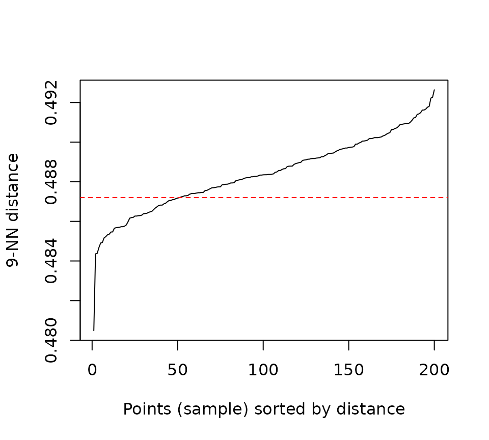

Clustering Algorithms
clustering_algorithms.RmdDownload a copy of the vignette to follow along here: clustering_algorithms.Rmd
Clustering Algorithms
SNF produces a single similarity matrix that is meant to describe how similar all the initial patients (or participants, or instances) are to each other across all the provided input features. Dividing that similarity matrix into subtypes requires can be done using clustering algorithms. Within the metasnf package, clustering is done by default using the spectral clustering algorithm (as implemented by the original SNFtool package). The code below goes over what the default clustering looks like.
Default clustering
# Load the package
library(metasnf)
# Start by making a data list containing all our dataframes to more easily
# identify subjects without missing data
full_data_list <- generate_data_list(
list(abcd_subc_v, "subcortical_volume", "neuroimaging", "continuous"),
list(abcd_h_income, "household_income", "demographics", "continuous"),
list(abcd_pubertal, "pubertal_status", "demographics", "continuous"),
list(abcd_anxiety, "anxiety", "behaviour", "ordinal"),
list(abcd_depress, "depressed", "behaviour", "ordinal"),
uid = "patient"
)
# Partition into a data and target list (optional)
data_list <- full_data_list[1:3]
target_list <- full_data_list[4:5]
# Specifying 5 different sets of settings for SNF
settings_matrix <- generate_settings_matrix(
data_list,
nrow = 5,
max_k = 40,
seed = 42
)
#> [1] "The global seed has been changed!"
# This matrix has clustering solutions for each of the 5 SNF runs!
solutions_matrix <- batch_snf(data_list, settings_matrix)
#> [1] "Row: 1/5 | Time remaining: 1 seconds"
#> [1] "Row: 2/5 | Time remaining: 0 seconds"
#> [1] "Row: 3/5 | Time remaining: 0 seconds"
#> [1] "Row: 4/5 | Time remaining: 0 seconds"
#> [1] "Row: 5/5 | Time remaining: 0 seconds"
#> [1] "Total time taken: 1 seconds."
extended_solutions <- extend_solutions(
solutions_matrix,
target_list,
cat_test = "fisher_exact"
)
#> [1] "Processing row 1 of 5"
#> [1] "Processing row 2 of 5"
#> [1] "Processing row 3 of 5"
#> [1] "Processing row 4 of 5"
#> [1] "Processing row 5 of 5"
clust_esm_manhattan <- esm_manhattan_plot(
extended_solutions,
threshold = 0.05,
bonferroni_line = TRUE
)
ggplot2::ggsave(
"clust_esm_manhattan.png",
clust_esm_manhattan,
width = 5,
height = 5,
dpi = 100
)
The Manhattan plot shows the p-values (y-axis) of the associations between our target variables (x-axis) and each cluster solution we calculated (colour) for each row of the settings matrix.
The information about the clustering used is tucked away in the settings matrix:
settings_matrix$"clust_alg"
#> [1] 2 1 2 1 1The “1” corresponds to spectral clustering using the eigen-gap
heuristic to determine the number of clusters, while the “2” corresponds
to spectral clustering using the rotation cost heuristic to determine
the number of clusters. You can find this information by running
?generate_settings_matrix.
Other built-in clustering options
Currently, the available clustering algorithms are:
spectral_eigenspectral_rotspectral_twospectral_threespectral_fourspectral_fivespectral_sixspectral_sevenspectral_eight
The first two are the defaults, and the remaining ones specifically use 2, 3, 4, … and so on as their number of clusters rather than whatever is calculated by a separate heuristic function.
To make use of any of these alternative algorithms, you’ll need to
provide batch_snf with a custom
clust_algs_list. Here’s what that looks like:
clust_algs_list <- generate_clust_algs_list()
# The default list:
clust_algs_list
#> $spectral_eigen
#> function (similarity_matrix)
#> {
#> estimated_n <- SNFtool::estimateNumberOfClustersGivenGraph(W = similarity_matrix,
#> NUMC = 2:10)
#> number_of_clusters <- estimated_n$`Eigen-gap best`
#> solution <- SNFtool::spectralClustering(similarity_matrix,
#> number_of_clusters)
#> solution_data <- list(solution = solution, nclust = number_of_clusters)
#> if (number_of_clusters != length(unique(solution))) {
#> warning("Spectral clustering provided a solution of size ",
#> length(unique(solution)), " when the number requested based on the eigen-gap heuristic",
#> " was ", number_of_clusters, ".")
#> }
#> return(solution_data)
#> }
#> <bytecode: 0x55dd14b2db38>
#> <environment: namespace:metasnf>
#>
#> $spectral_rot
#> function (similarity_matrix)
#> {
#> estimated_n <- SNFtool::estimateNumberOfClustersGivenGraph(W = similarity_matrix,
#> NUMC = 2:10)
#> number_of_clusters <- estimated_n$`Rotation cost best`
#> solution <- SNFtool::spectralClustering(similarity_matrix,
#> number_of_clusters)
#> solution_data <- list(solution = solution, nclust = number_of_clusters)
#> if (number_of_clusters != length(unique(solution))) {
#> warning("Spectral clustering provided a solution of size ",
#> length(unique(solution)), " when the number requested based on the rotation cost heuristic",
#> " was ", number_of_clusters, ".")
#> }
#> return(solution_data)
#> }
#> <bytecode: 0x55dd14b2fc88>
#> <environment: namespace:metasnf>
# A prettier format:
summarize_clust_algs_list(clust_algs_list)
#> alg_number algorithm
#> 1 1 spectral_eigen
#> 2 2 spectral_rot
# Adding algorithms provided by the package
clust_algs_list <- generate_clust_algs_list(
"two_cluster_spectral" = spectral_two,
"five_cluster_spectral" = spectral_five
)
# Note that this one has the default algorithms as well as the newly added ones
summarize_clust_algs_list(clust_algs_list)
#> alg_number algorithm
#> 1 1 spectral_eigen
#> 2 2 spectral_rot
#> 3 3 two_cluster_spectral
#> 4 4 five_cluster_spectral
# This list has only the newly added ones, thanks to the disable_base parameter
clust_algs_list <- generate_clust_algs_list(
"two_cluster_spectral" = spectral_two,
"five_cluster_spectral" = spectral_five,
disable_base = TRUE
)
summarize_clust_algs_list(clust_algs_list)
#> alg_number algorithm
#> 1 1 two_cluster_spectral
#> 2 2 five_cluster_spectralBy default, the settings matrix only varies over the values 1
and 2. This is because, by default, it only expects you to use
the default clustering algorithms. If your custom list is two algorithms
long, that’s fine, but if it isn’t, it’s imperative that you either
manually adjust the numbers in settings_matrix$"clust_algs"
or (more easily) you supply your custom list during settings matrix
generation:
# This list has only the newly added ones, thanks to the disable_base parameter
clust_algs_list <- generate_clust_algs_list(
"two_cluster_spectral" = spectral_two,
"three_cluster_spectral" = spectral_three,
"five_cluster_spectral" = spectral_five
)
# Specifying 5 different sets of settings for SNF
settings_matrix <- generate_settings_matrix(
data_list,
nrow = 10,
max_k = 40,
seed = 42,
clustering_algorithms = clust_algs_list
)
#> [1] "The global seed has been changed!"
settings_matrix$"clust_alg"
#> [1] 3 1 1 5 2 2 4 1 3 3Then, make sure to provide the clust_algs_list once more
during the call to batch_snf:
solutions_matrix <- batch_snf(
data_list,
settings_matrix,
clust_algs_list = clust_algs_list
)Structure of a clustering algorithm function
Any clustering algorithm can be used as long as you can write a function for it with the following format:
- Takes a single N*N similarity_matrix as its only input
- Returns a named list:
- The first item (named “solution”) is a single N-dimensional vector of numbers corresponding to the observations in the similarity matrix
- The second item (named “nclust”) is a single integer indicating the number of clusters that the algorithm is supposed to have generated
That second point seems redundant in that it could be calculated by
simply running length(unique(solution)), but it’s useful to
keep track of it separately for troubleshooting purposes.
Note that the function should not take number of clusters as an argument - if you want to explore the same clustering algorithm with a varying number of clusters, you’ll need to provide a separate function for each number of clusters you’re interested in.
The source code for the two default functions are shown below:
# Default clustering algorithm #1
spectral_eigen <- function(similarity_matrix) {
estimated_n <- SNFtool::estimateNumberOfClustersGivenGraph(
similarity_matrix
)
number_of_clusters <- estimated_n$`Eigen-gap best`
solution <- SNFtool::spectralClustering(
similarity_matrix,
number_of_clusters
)
return(list("solution" = solution, "nclust" = number_of_clusters))
}
# Default clustering algorithm #2
spectral_rot <- function(similarity_matrix) {
estimated_n <- SNFtool::estimateNumberOfClustersGivenGraph(similarity_matrix)
number_of_clusters <- estimated_n$`Rotation cost best`
solution <- SNFtool::spectralClustering(similarity_matrix, number_of_clusters)
solution_data <- list("solution" = solution, "nclust" = number_of_clusters)
return(solution_data)
}Non-automated clustering
You can also extract the similarity matrices for each computed row of the settings matrix and perform the clustering more “manually”. This is particularly useful for clustering procedures where the transition from a similarity matrix to the final solution requires human intervention (e.g., judgement for clustering hyperparameters).
batch_snf_results <- batch_snf(
data_list,
settings_matrix,
clust_algs_list = clust_algs_list,
return_similarity_matrices = TRUE
)
#> [1] "Row: 1/10 | Time remaining: 0 seconds"
#> [1] "Row: 2/10 | Time remaining: 1 seconds"
#> [1] "Row: 3/10 | Time remaining: 1 seconds"
#> [1] "Row: 4/10 | Time remaining: 1 seconds"
#> [1] "Row: 5/10 | Time remaining: 1 seconds"
#> [1] "Row: 6/10 | Time remaining: 0 seconds"
#> [1] "Row: 7/10 | Time remaining: 0 seconds"
#> [1] "Row: 8/10 | Time remaining: 0 seconds"
#> [1] "Row: 9/10 | Time remaining: 0 seconds"
#> [1] "Row: 10/10 | Time remaining: 0 seconds"
#> [1] "Total time taken: 1 seconds."
names(batch_snf_results)
#> [1] "solutions_matrix" "similarity_matrices"
solutions_matrix <- batch_snf_results$"solutions_matrix"
# Similarity matrices are in the list below:
similarity_matrices <- batch_snf_results$"similarity_matrices"
length(similarity_matrices)
#> [1] 10
dim(similarity_matrices[[1]])
#> [1] 87 87
# Your manual clustering goes here...Example of non-automated clustering: DBSCAN
Let’s say we wanted to cluster our similarity matrices with DBSCAN rather than with spectral clustering. Start by taking a look at the documentation for running the DBSCAN function from the dbscan R package https://cran.r-project.org/web/packages/dbscan/dbscan.pdf:
DBSCAN is about as challenging as custom clustering can get, as the suggested process for specifying the number of clusters is recommended to involve human intervention and the function itself operates on dissimilarity (distance) matrices rather than similarity matrices.
Below is a slightly adjusted form of their dbscan
example. You can work through this on your own.
library(dbscan)
## Example 1: use dbscan on the iris data set
data(iris)
iris <- as.matrix(iris[, 1:4])
iris_dist <- dist(iris)
## Find suitable DBSCAN parameters:
## 1. We use minPts = dim + 1 = 5 for iris. A larger value can also be used.
## 2. We inspect the k-NN distance plot for k = minPts - 1 = 4
kNNdistplot(iris, minPts = 5)
## Noise seems to start around a 4-NN distance of .7
abline(h=.7, col = "red", lty = 2)
results <- dbscan(iris_dist, eps = 0.7, minPts = 5)
# The 1 is added to ensure that those with no cluster (cluster 0) are still
# plotted.
pairs(iris, col = results$cluster + 1)After some poking around, you will often see people mentioning that
DBSCAN just isn’t meant to be automated. You need to look at your data
to have a good idea of what values to use for the hyperparameters
eps and minPts. When you need to get involved
manually, that’s the perfect time to manage the many similarity matrices
you’ve created with batch_snf through meta clustering.
Generate a wide range of similarity matrices and apply meta clustering
to find a few representative similarity matrices. One way to do this
would be based on how the spectral-clustering derived solutions end up
clustering together (see example).
Then take the corresponding affinity matrices and go through the dbscan
clustering process manually.
Based on ?dbscan, it looks like the function can accept
precomputed distance matrices (instead of
precomputed_nn_objects) as long as they actually are
dist objects (which can be done using the
as.dist() function). There are many formulas to convert
between similarity matrices and distance matrices which have their own
pros and cons. Here, we’ll use a common approach of
distance = max(similarity) - similarity. Whichever matrix
values had the maximum similarity will now have a distance of 0, and
whichever matrix values had the lowest amount of similarity will have
distance values that are the closest to the former maximum similarity
value.
library(dbscan)
#>
#> Attaching package: 'dbscan'
#> The following object is masked from 'package:stats':
#>
#> as.dendrogram
library(ggplot2)
data_list <- generate_data_list(
list(
data = expression_df,
name = "genes_1_and_2_exp",
domain = "gene_expression",
type = "continuous"
),
list(
data = methylation_df,
name = "genes_1_and_2_meth",
domain = "gene_methylation",
type = "continuous"
),
uid = "patient_id"
)
settings_matrix <- generate_settings_matrix(
data_list,
nrow = 5,
seed = 42
)
#> [1] "The global seed has been changed!"
batch_snf_results <- batch_snf(
data_list,
settings_matrix,
return_similarity_matrices = TRUE
)
#> [1] "Row: 1/5 | Time remaining: 1 seconds"
#> [1] "Row: 2/5 | Time remaining: 1 seconds"
#> [1] "Row: 3/5 | Time remaining: 1 seconds"
#> [1] "Row: 4/5 | Time remaining: 0 seconds"
#> [1] "Row: 5/5 | Time remaining: 0 seconds"
#> [1] "Total time taken: 2 seconds."
similarity_matrices <- batch_snf_results$"similarity_matrices"
solutions_matrix <- batch_snf_results$"solutions_matrix"
representative_sm <- similarity_matrices[[1]]
representative_sms <- similarity_matrices[c(1, 2)]
distance_matrix1 <- as.dist(
max(representative_sm) - representative_sm
)
kNNdistplot(
distance_matrix1,
minPts = 10
)
## Maybe there?
abline(h=0.4872, col = "red", lty = 2)
dbscan_results <- dbscan(distance_matrix1, eps = 0.4872, minPts = 10)$"cluster"
spectral_results <- get_clusters(solutions_matrix[1, ])
dbscan_vs_spectral <- data.frame(
dbscan = dbscan_results,
spectral = spectral_results
)
ggplot(dbscan_vs_spectral, aes(x = dbscan, y = spectral)) +
geom_jitter(height = 0.1, width = 0.1, alpha = 0.5) +
theme_bw()
There’s one bold lie in the code chunk above, which is how easy it
was to find that magic hyperparameter combination of
minPts = 10 and eps = 0.487 parameter value of
0.4872. It wasn’t based off of the visual inspection of the kNNdistplot,
but rather through a lot of trial and error.
Something along the lines of:
for (i in seq(0.485, 0.488, by = 0.0001)) {
results <- dbscan(distance_matrix1, eps = i, minPts = 10)
if (length(unique(results$"cluster")) == 3) {
print(i)
}
}In this specific instance, those hyperparameters are incredibly sensitive - a slight change will get very different results. That is likely due to the shape of the actual data being clustered. Your mileage may vary!